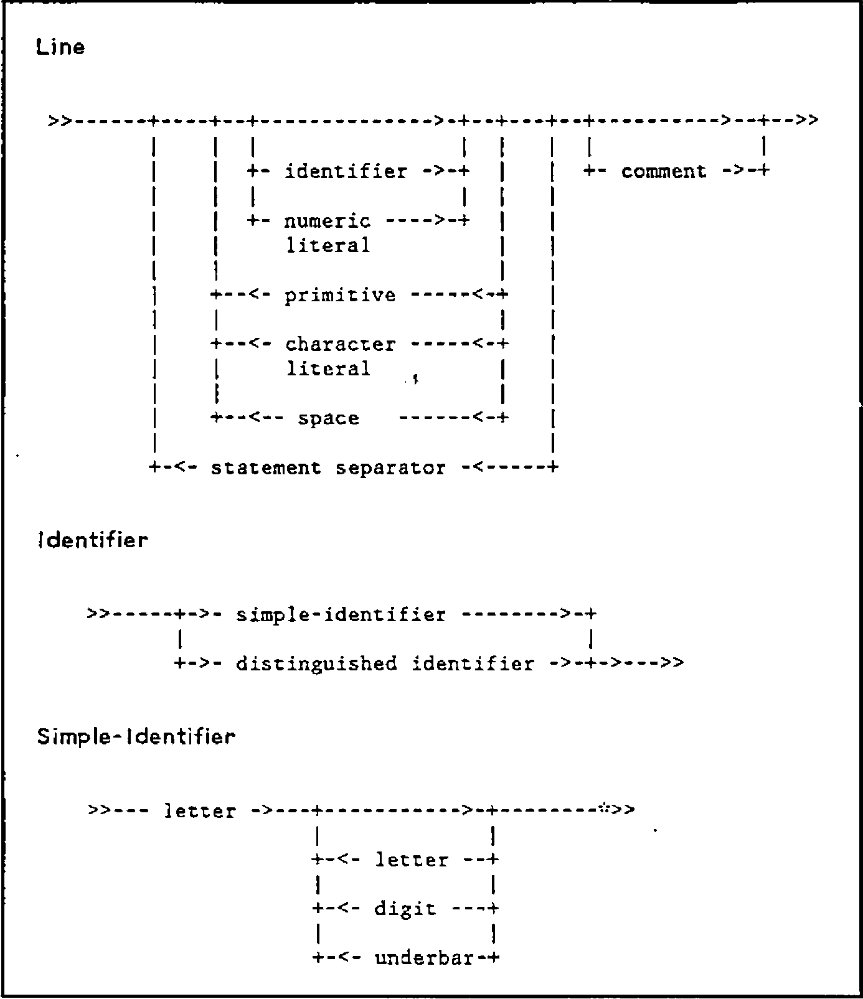
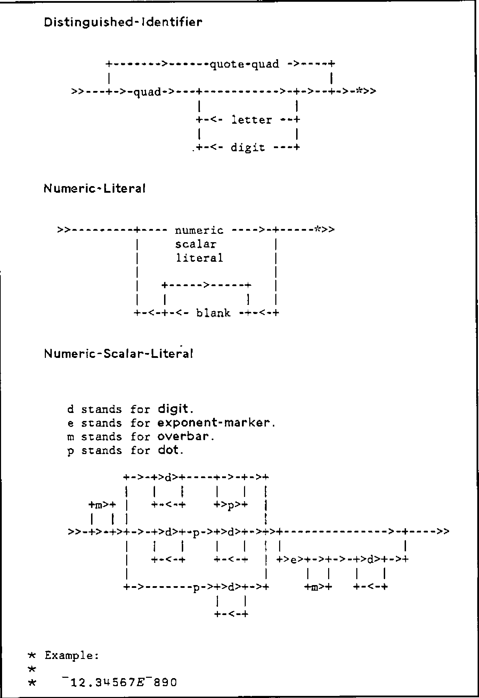
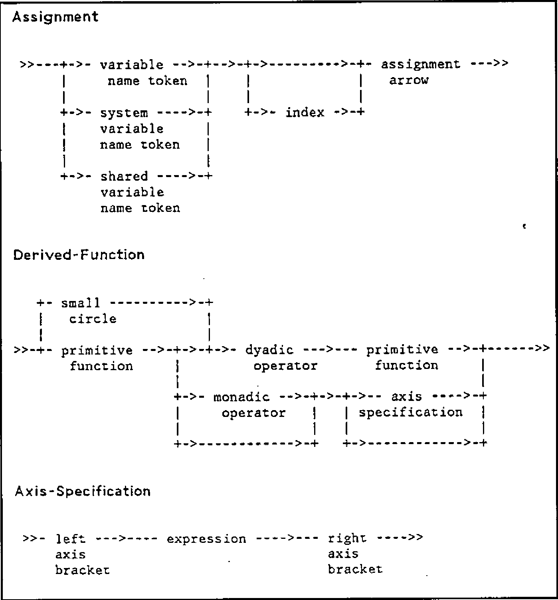

International APL standard
Vector 1:1, page 143
Transcribed from the printed issue; not yet reviewed. Read it in the PDF of the issue, page 143
Introduction¶
This paper constitutes a technical exploration of the contents of the proposed international APL standard. Before the contents are examined, an introduction followed by short sections on the reasons for standardisation and a brief history of the standard are provided. The important concepts of the “conforming implementation” and the “conforming program” are then explained in detail. A description of the features included in the standard is then presented, with a list of some of the features explicitly not included. Finally, a concluding passage discusses ways in which the standard will be of use to the authors of APL implementations and programs.
Casual readers be warned — this paper is a précis of the draft standard and is heavy going.
Why standardise?¶
APL has been around for 20 years without a standard, so why bother now? Well, the answer lies in the growth of APL, both in terms of the number of establishments using it and the diversification of the language itself. As the number of people using APL grows, communicating between them becomes more difficult, and the need for a definitive APL implementation increases. At a time when there are so many differing implementations of APL on the market, it is important for APL people to come together and see if they can agree upon what constitutes a minimal APL. Only once this is done can we start to exchange APL programs and skills on a global scale. The absence of a suitable standard has doubtless prevented the adoption of APL in many areas, in particular, government departments in the US will not sanction any computer language unless it has a standard.
The purpose of the standard is probably best summarised by quoting from the standard itself which states that “This International Standard defines the programming language of APL and the environment in which APL programs are executed. Its purpose is to facilitate interchange and promote portability of APL programs and programming skills among data processing systems.”
A Brief History of the Standard¶
International Standards are produced under the control of the International Standards Organisation (ISO), which works under the auspices of the United Nations and is responsible for producing standards of all kinds. Working through international technical committees, drafts of international standards slowly come into existence and are then voted to become ISO standards by the national standards organisations.
The national standards organisations gather national experts into committees which contribute to the development of national and international standards, submitting their work to ISO or the IEC (International Electrotechnical Commission). They also vote on proposals from ISO (or IEC) for adoption of international standards, and adopt either ISO standards or their own home-grown product as national standards. If a country produces its own national standard before an equivalent ISO standard exists, it usually submits it to ISO as a draft ISO standard.
Creating international standards takes a long time, and a lot of forests. Even once agreement has been reached in the international forum (which does occasionally happen), there is still the liaison between the ISO committee and the various national committees and other international committees to contend with. The extensive ISO procedures also have to be followed before the ISO standard is adopted. It can, and usually does, take years.
Figure 1. Some Syntax Diagrams

In 1979, AFNOR the French national standards body proposed to the ISO technical committee on information processing (TC97), that an International Standard for APL should be produced. The proposal was accepted, and the work was assigned to TC97’s sub-committee on programming languages, SC5, which set up Working Group 6 to assist. The first draft appeared in 1980. At approximately the same time, ANSI decided to produce a US APL standard, and so another draft appeared. Needless to say, the two drafts were quite different.
In 1981 it was agreed at an international meeting in the USA, that the two drafts should be merged into a single international working draft. This work proceeded, with contributing experts from the USA, Canada, Japan, Britain, France and other European countries. By August 1983, the fifth working draft had been distributed and accepted by SC5 as the first draft proposal. By the beginning of 1984 the draft proposal was circulated to the SC5 P-members (BSI in the case of Britain) for a three month comment period. These comments will be processed at the next Working Group 6 meeting in Helsinki just before APL84. The result of this will be an instruction to the editor to prepare a second draft proposal. Subsequent processing will then result in an international standard — hopefully, in the not too distant future. When it does, APL will be the first language for which the international standard has preceded any national standard.
This paper was written at the time of the first draft proposal and it is to this document that the remainder of the paper refers.
The Form of the Standard¶
The standard describes the behaviour of a hypothetical APL machine by specifying how it responds to inputs. The syntax (rules for combining the funny symbols) of this machine is defined by syntax diagrams (or railroad tracks, as they are sometimes called), which are generally easier to understand than the more traditional Backus-Naur form. The standard described three main processes which perform the analysis of syntax:
- line evaluation: this uses a set of syntax diagrams to decompose a line of characters into a list of lexical tokens, working from left to right.
- statement evaluation: this uses syntax diagrams to transform a list of lexical tokens into a list of syntactic tokens, still working from left to right.
- statement reduction: now working from right to left, this uses a phrase table to decompose a list of syntactic units into shorter lists, called phrases, each of which is then evaluated by one of 12 phrase evaluators.
The semantics of APL (what the funny symbols mean) are defined by the behaviour of these phrase evaluators, and that of the formal procedures which they in turn call. These procedures, or evaluation sequences as they are called, are expressed in a formal language which uses English words in a sense precisely defined in the standard. The result is a precise but nevertheless readable document. There is no requirement for an implementation to follow the algorithms suggested in the evaluation sequences exactly, provided that the system produces results indistinguishable from those of the APL machine described in the standard.
As well as specifying the syntax and semantics of APL programs, the standard also specifies the characteristics of the environment in which APL programs are executed, and the requirements for conformance with the standard. In this context, the term ‘program’ is used broadly, to include everything from a single APL expression to a collection of workspaces communicating via shared variables.
On the other hand, the standard DOES NOT specify:
- required values for implementation limits such as APL workspace site or numeric precision.
- the data structure used to represent APL objects.
- the facilities available through shared variables.
Some Technical Terms¶
Of fundamental importance to an understanding of the standard are the two terms ‘conforming implementation’ and ‘conforming program’. Loosely speaking, a conforming implementation is an APL interpreter which follows the rules laid down in the standard, and a conforming program is an APL program which would run successfully on the APL machine specified in the standard. In order to define these terms more strictly, we have first to consider the four classes of facility recognised by the standard. These are the defined facility, implementation defined facility, optional facility and the consistent extension.
Defined facility — this is a facility that is fully specified by the standard, and not designated optional or implementation defined. The transpose function, for example, is a defined facility in the standard.
Optional facility — this is a facility that is also fully specified by the standard, but is designated optional, as a conforming implementation may or may not include it. The APL statement separator is an example of an optional facility.
Implementation defined facility — this is a facility that is NOT fully specified by the standard, and is designated implemention defined. The algorithm used by an implementation to generate pseudo-random numbers, for example, is an implementation defined facility, but the APL functions roll and deal are defined facilities and must be provided as specified.
Consistent extension — this is a facility that is NOT specified at all by the standard, but if included in an APL implementation will not give rise to an error in circumstances in which the APL machine would. In other words, an error report arising from a specific input to the APL machine in the standard can be replaced by some other behaviour in the actual implementation. For example, you can bring out an implementation with a brand new APL function in it (say a dyadic execute function) because this would replace an error report by some other action. The consistent extension is the only mechanism by which extra APL features may be added to an implementation.
Conforming Implementations¶
We can now look more closely at what a conforming APL implementation actually is. In order to conform to the standard, an implementation must provide all the defined facilities and implementation defined facilities specified in the standard, and each defined facility must behave exactly as specified. Additionally, a conforming implementation may provide any or all of the facilities described in the standard as optional. If included, the facility must behave exactly as specified. Finally, a conforming implementation may also include any consistent extensions. Because the consistent extention mechanism is the only way the standard permits an implementation to provide extra APL features, the standard itself tends to adopt a ‘minimal’ approach, including only minimum agreed features. Where implementations differ, the standard will often require an error. This is not meant to encourage an implementation to produce an error under the particular circumstance, but to allow more than one interpretation to be standard conforming. Some examples of this will be described later. The observant reader may have noticed one loophole that needs to be closed here. A program that attempts to use an optional facility that is not provided in a particular implementation will generate an error. It is therefore NOT permissible for an implementation to replace such error signalling by any other behaviour.
Implementation algorithms and implementation parameters¶
Before we proceed, it will be necessary to look at two further concepts — implementation algorithms and implementation parameters. Facilities in the standard are described both informally in English and procedurally using what are called evaluation sequences. These evaluation sequences often refer to algorithms not defined in the standard, and whose behaviour is deemed implementation defined — that is, it’s up to the implementor to provide an exact definition. These implementation algorithms fall into five groups:
The Implementation algorithms¶
- Pythagorean algorithms; eg sine, inverse cosine, hyperbolic tangent
- General numeric algorithms; Exponential, gamma function, modulo, natural logarithm and power
- Seminumeric algorithms; the pseudorandom number generator, and the algorithm for the deal function
- Linear algebraic algorithms; this group only contains the algorithm for generalised matrix divide
- System dependent algorithms; eg how numeric literals are converted to internal numbers, how the current time is generated, how a function trace display is to be presented, and others.
Each one of these algorithms is referred to by the standard, but must be defined by the particular APL implementation. In addition to these algorithms are the implementation parameters. These are quantities referred to by the standard but whose values are implementation defined. Over twenty of these are recognised by the standard, and some examples follow:
Some implementation parameters¶
- Atomic vector: an implementation defined character vector containing every element of the character set exactly once.
- Positive number limit: the number (in machine rather than mathematical terms) greater than all other numbers.
- Rank limit: an integer specifying the maximum value for the rank of an array. The limit must apply uniformly to all arguments and results of primitive operations.
- Identifier length limit: an integer specifying the maximum number of characters in an identifier.
- Comparison tolerance limit: the largest value permitted by the implementation for the system variable quadCT.
- Integer tolerance: a value used to determine whether a given number is to be considered integral or not.
The question then naturally arises — what happens if some action causes a limit specified by one of these implementation parameters to be exceeded? For example, suppose you try to increase the rank of an array which already has the maximum number of dimensions permitted by the particular implementation you are using. Clearly, it would be nice if the implementation complained about this, rather than just ignoring the attempted action, or even taking some other action and not telling you what it’s done. (A good example of the latter is the behaviour of some implementations when you try to reference a variable whose name contains more characters than the identifier length limit — the name is very often merely truncated to the maximum permitted length, and you don’t even get to know about it!)
Figure 2. More Syntax Diagrams

The problem is solved by requiring a conforming implementation to signal an error if any action is taken that would result in an implementation parameter limit being exceeded. But what error? Out of the existing popular error messages only DOMAIN ERROR comes close, but not close enough. A DOMAIN ERROR should strictly only be reported when a function argument lies outside the domain of the function — it is an abstract mathematical concept rather than an indication of a shortcoming of a particular implementation of the APL language. So, a small bit of creativity was experienced here, and the standard requires that a new error message, LIMIT ERROR, be signalled in such cases.
Required documentation for conforming implementations¶
A conforming implementation must provide documentation relating to its optional facilities, implementation defined facilities and consistent extensions. It must document the presence or absence of each of the facilities described in the standard as optional, and also the following aspects of the implementation defined facilities:
- a description of the character set. This must include a chart showing the correspondence between the atomic vector and the characters in the required character set. (The required character set is a standard-specified subset of an implementation defined finite set of characters called the character set).
- a description of the numbers, including a characterisation of the internal representation used. (Note that the numbers are an implementation defined finite set whose elements are used to represent arithmetic quantities).
- descriptions of the characteristics of each implementation algorithm.
- the value of each implementation parameter.
As far as consistent extensions goes, each one provided must be documented by a conforming implementation. The documentation must also clearly state that use of a consistent extension prevents a program from conforming with the standard.
This documentation has often been colloquially referred to as the ‘toaster plate’ of an implementation because, like a plate on an electrical appliance, it reveals to the potential purchaser the salient features and limitations of the product.
People occasionally ask why implementation parameter limits like the rank limit and identifier length limit are not hard-coded into the standard. To do this means deciding upon a minimum value necessary to achieve conformance, and this is hard to do, as everyone has different ideas about what constitutes a minimal APL. For example, what would you choose as the minimum allowable rank limit for an APL implementation? Typical answers are 3, 8, 15, 63 etc. These answers are arbitrary, and often have more to do with people’s ideas of how computers work than with useful limits. Let’s say we decide on 15 as our minimum rank limit. This means that we reject as non-conforming any APL implementation that allows no more than 14 dimensions in any array. Alternatively, we may encourage an implementor to use a more inefficient storage representation for arrays just because we insist upon a rank limit of 15 rather than 14. The approach in the standard has therefore been, loosely speaking, that implementors can decide the values of these limits themselves, but they’ve got to tell everyone loud and clear what they are.
If you see two conforming implementations, one with a rank limit of 3 and one with a rank limit of 30, you will know which one to buy, just as you know which electric fire will warm you if one is rated at 3 watts and the other at 3 kilowatts. The attitude is very much one of ‘let the market decide’.
Figure 3. Yet More Syntax Diagrams

Conforming Programs¶
We now know how to spot a standard-conforming APL implementation, but what about standard conforming APL programs? It is extremely important to be able to write a conforming program if you want to port it between conforming implementations.
A conforming program can use only facilities that are specified in the standard, that is defined, implementation defined and optional facilities. A conforming program cannot use consistent extensions. Also, a conforming program cannot depend on the signalling of any error by a conforming implementation. This is because consistent extensions that replace errors are permitted in conforming implementations. This means that a conforming program cannot use an error trapping facility (which may be provided as a consistent extension by a conforming implementation), and more interestingly, the standard in its present form can never include one as a defined, implementation defined, or even optional facility.
Note that in general, the presence of a consistent extension in a conforming implementation shall not affect the behaviour of a conforming program. Remember also, that errors produced by the absence of an optional facility cannot be replaced by consistent extensions in a conforming implementation, since this would affect the behaviour of conforming programs that use the optional facility.
Implementors of conforming implementations are also discouraged from replacing LIMIT ERRORS with consistent extensions, since these errors are the only safeguards a conforming program has when attempting to operate in a conforming implementation whose implementation parameters are inadequate to support it. For example, if the LIMIT ERROR on the identifier length limit were not signalled, a conforming program with identifiers longer than the local identifier length limit would malfunction without warning. Currently the standard only warns implementations off doing this, but does not prohibit it.
Required documentation for conforming programs¶
A conforming program must document which of the optional features described in the standard it requires. It also has to document any specific minimal values required for implementation parameters. For example, it may perform calculations upon numbers as large as 1E100 and would therefore require an implementation whose positive number limit was at least this large. The document should also state, for another example, the length of the longest identifier name in order to determine whether the program can run on a particular implementation. Generally, the requirement for each of the implementation parameters should be documented in order to determine the program’s suitability for a given conforming implementation.
It is not surprising that a non-conforming program can produce unexpected results when run on a conforming implementation, but more surprising that the same is true of conforming programs. In fact, a conforming program may or may not work, and may or may not produce identical results on different conforming implementations, due to inherent dependencies on implementation parameters or implementation algorithms. For example, the algorithm used for matrix divide is implementation defined, and may or may not generate a DOMAIN ERROR for given arguments on different conforming implementations. Another example is the implementation parameter called integer tolerance. The value of this parameter is used by an implementation to determine whether a given number is to be considered integral or not. So the same index expression run on two conforming implementations could produce a result on one and an error on the other, dependent on their respective values for this parameter. This situation seems unavoidable, but is alleviated when conforming programs document required values for such parameters.
Figure 4. Some Phrase Evaluators
5.3.12 And
Z ← A ∧ B
* Z is the Boolean product of A and B.
Evaluation Sequence:
If either A or B is not near-Boolean, signal domain-error.
Set A1 to the integer-nearest-to A.
Set B1 to the integer-nearest-to B.
If either A1 or B1 is zero, return zero.
Otherwise, return one.
* Example:
*
* 0 1 ∘.∧ 0 1
* 0 0
* 0 1
5.3.13 Or
Z ← A ∨ B
* Z is the Boolean sum of A and B.
Evaluation Sequence:
If either A or B is not near-Boolean, signal domain-error.
Set A1 to the integer-nearest-to A.
Set B1 to the integer-nearest-to B.
If either A1 or B1 is one, return one.
Otherwise, return zero.
* Example:
*
* 0 1 ∘.∨ 0 1
* 0 1
* 1 1
APL facilities in the standard¶
In this section we will summarise the content of the standard in terms of the APL features included within it. First let’s take a high-level view of what has been included in and excluded from the standard. This will be done by comparison with IBM’s VS APL, because VS APL is widely known, and is most similar to the APL machine described in the standard.
The standardisation committee agreed early on in the process that the standard should describe existing practice in APL rather than establish a new language level. As a guideline, a feature is considered for standardisation if it exists in at least two existing APL implementations. In other words, the standard documents rather than invents, as far as possible. (In fact, there are some minor exceptions to this as we shall see).
Here is a list of defined facilities included in the standard:
- all of the primitive functions and operators from VS APL that you have come to know and love.
- the system functions quadTS, quadAV, quadLC, quadDL, quadNC, quadEX, quadFX and quadCR.
- the system variables quadCT, quadRL, quadPP, quadIO and quadLX.
- quad and quote quad input and output.
- entry and editing of niladic, monadic and dyadic user defined functions via a minimal del-editor.
- the system commands )CLEAR, )COPY, )DROP, )ERASE, )FNS, )LIB, )LOAD, )RESET, )SAVE, )SI, )SINL, )VARS, )WSID.
- the use of the underbar character (_) in all but the initial character of identifiers
- the use of comments to the right of, and on the same line as executable code (end of line comments).
The last two points constitute added features to VS APL.
Currently only three facilities are described as optional in the standard:
- shared variables via the system functions quadSVO, quadSVQ, quadSVC and quadSVR.
- the diamond statement separator.
- trace and stop control via the system functions quadTRACE and quadSTOP.
The standard specifically does not include, or make any reference to, the following facilities:
- a component filing system via system functions.
- trace and stop control via the Tdelta and Sdelta syntax.
- the implementation dependent system functions quadAI, quadWA and quadPW.
- the grouping of identifiers via system commands such as )GROUP, )GRP or )GRPS.
- the creation and behaviour of locked user defined functions.
- mechanisms for creating and handling enclosed or generalised arrays.
- error trapping.
- pass-through localisation, ie. initialisation of localised system variables to the value of their global homonyms.
In fact, all of these facilities (except the Tdelta and Sdelta syntax) could be provided by an implementation as consistent extensions, although a conforming program could not then employ them.
Let’s now look at some of the specified facilities in more detail:
Primitive functions¶
These are as found in VS APL, with no omissions and no additions. There are some interesting points to note however:
- if an argument to a scalar function is empty, then the result is also empty, and has a type dependent on the function being used. For example, the expression “3-” will yield an empty numeric vector, as will the expression “+”.
- in the standard, roll and deal are classified as mixed rather than scalar functions because their result arrays cannot be generated in parallel.
- the standard has been designed with a view to allowing complex arithmetic as a consistent extension. This is apparent in two areas:
- the more usual definition of the circular function with a left argument of “-4” has been replaced by one which would permit such a consistent extension.
- the distinction made in some implementations of APL between rational and irrational powers has been eliminated to allow complex arithmetic as a consistent extension. For example, the standard requires that “-8” raised to the one-third power should yield a domain error, because the right argument of power is not integral. This behaviour can then, of course, be replaced by a suitable consistent extension.
- the result of “A,B” where A and B are empty vectors is always the value of A. For example, the result of the expression “'',0/0” is the empty character vector, whereas the result of “(0/0),''” is the empty numeric vector. In practice, this seems to differ from system to system, with some giving the result as the left argument, some the right argument and some either the numeric vector always or character vector always. The standard has gone for the left argument, but the point is still under discussion!
- in accordance with the ‘minimal’ approach, the definition of the base value (decode) function is stricter than on many implementations. It does not require that a unit inner dimension of one argument be replicated to match the corresponding inner dimension of the other. This behaviour can be provided as a consistent extension.
- indexed assignment is defined so that assigning 1 2 3 into A[1 1 1] causes A[1] to have the value 3. This not necessarily obvious result comes from the decision to process the assignments in the ravel order of the index array rather than notionally in parallel. An alternative would have been for the standard to require a domain error, and leave the implementor to provide a suitable consistent extension. It was felt, however, that in this case standardising the result was more useful than ignoring the problem.
System function and system variables¶
The standardisation committee spent a lot of time and expended much energy in this area, although there are few surprises. The primary difference between system functions and system variables is that an error is signalled if the name of a system function appears in the list of local names of a user defined function header. Among the points of interest are the following:
- quadTS uses an implementation defined facility to generate its result.
- quadLC contains only elements relating to user defined functions, and not to contexts created by the use of the execute function or quad input.
- quadNC and quadEX signal DOMAIN ERROR if their arguments contain names which are not simple identifiers, so that consistent extensions can be made. A simple identifier is an identifier which does not start with a quad or quote quad character.
- the standard ensures that an error is reported if the syntax class of any tokens in a statement changes during execution of that statement. For example, the expression “F quadEX'F'” attempts to do just this, where F is a user defined monadic function. A syntax error would be reported in this case. Similarly, an attempt to fix a function G by using quadFX in an expression that forms the left argument of a call to the dyadic function G will result in a DOMAIN ERROR. A conforming implementation may relax these restrictions, of course, but a conforming program must abide by them.
- the evaluation sequences for assignment to the system variables report DOMAIN ERROR if the value to be assigned is unacceptable to that system variable. In addition, primitive functions that implicitly use system variables will report IMPLICIT ERROR if the relevant system variable has no value. This can happen if a system variable is localised to a function and not set before it is implicitly referenced by a primitive function. Conforming programs that localise system variables should therefore assign them valid values before calling any primitive operations that require them.
User defined functions¶
- user defined functions may be created and edited via a minimal del-editor described in the standard. Currently this is a defined facility, and is therefore required by a conforming implementation, but some people feel that in these days of clever full screen editors, it is unreasonable to insist upon a line-editor. It is possible, therefore, that the facility may become optional in a later draft.
- the class of the result name in a user defined function cannot be defined function or shared variable. A value error is signalled under such circumstances in order to prevent conforming programs from causing an exit from a function when the result name has one of these classes.
- an error should not be reported by a conforming implementation if a defined function fails to assign to its result name and the calling context does not require a value.
System commands¶
- thirteen system commands are currently included as a defined facility, although there is some feeling that these should be made optional, or even removed altogether. Some implementations provide the required operations by way of system functions. In the standard, system commands cannot be entered during function definition mode, or invoked as an argument to the ‘execute’ primitive.
Shared variables¶
- shared variables are an optional facility of the standard. They provide an interface between cooperating APL sessions, although they may also be used to provide an interface between APL programs and non-APL system facilities. Conforming programs that use shared variables must document this fact, since shared variables are not a defined facility of the standard.
Trace and stop control¶
- trace and stop facilities are provided in the standard via the system functions quadTRACE and quadSTOP. The facility is optional because it is only just coming into widespread use. The two functions are the only example of full English words being used in the names of system functions or variables. However, the standards committee were unanimously agreed that the Tdelta and Sdelta syntax would not be cast in concrete, and so some design had to be done in this area. The right argument is always the function name. When used monadically, the result is the line numbers of the lines currently set for trace/stop. Dyadically, the left argument is a vector of line numbers for which a trace/stop set is required. The result is then the line numbers of the prior set. If an attempt to trace or stop line zero of a function is made, a DOMAIN ERROR is reported, thereby allowing consistent extensions to be made here.
Figure 5. More Phrase Evaluators
8.1.7 Execute
Z ← ⍎ B
* Z is the result of evaluating the character scalar or vector B
* as a line of APL.
Evaluation Sequence:
If the rank of B is greater-than one, signal rank-error.
If any item of the ravel-of B is not a character, signal
domain-error.
Generate a new context with
mode set to execute.
current-line set to the ravel-of B.
Append the new context to the state-indicator as a new first
item.
Set Z to evaluate-line.
Remove the first context from the state-indicator.
Return Z.
* Examples:
*
* ⍎'T←3'
* T
* 3
* ⎕←⍎'T←3'
* 3
* A←⍎''
* value-error
*
Note:
If an error is signalled during execute, the user should be able to
determine from information provided by the system where the error
occurred in the argument of execute as well as where the failing
execute primitive occurred in the immediate-execution or
defined-function line.
Finally, let’s take a quick look at the reasons for excluding certain facilities from the standard. In general, these reasons can be summarised in the following list:
- The facility has not achieved widespread use among many implementations of APL.
- The function provided by the facility is fairly widespread, but different APLs provide the feature via a different syntax.
- The facility is too closely bound to the specific nature of the operating environment rather than to the APL language itself.
- Inclusion of the facility would result in the APL language being compromised, from a theoretical viewpoint.
These considerations have to be balanced against the commercial desirability and usefulness of a particular feature, and these judgements are of course subjective.
Good arguments against including a component filing system, for instance, can be constructed from all the points on the above list, although this is left as an exercise for the reader.
Conclusion¶
As well as improving the portability of APL programs, the international APL standard will also promote the use of APL itself, and improve the quality of APL implementations. The standard will prove (and already has proven) invaluable for APL implementors who wish to conform to it. It can be used to form the basis of an implementation and to encourage implementors to provide extensions to the language which are consistent with the standard. The standard will also be important for software vendors who wish to write standard conforming programs. It will encourage them to reduce, isolate and document those areas of their packages that are not standard conforming. Finally, and most importantly, those who purchase APL interpreters and APL programs will expect to see the product documentation required by the standard for conforming implementations and programs. The prospective purchaser of an APL interpreter should be able to determine quickly whether it conforms to the standard, and what optional features and consistent extensions it provides. Those buying APL software should likewise be able to determine the suitability of APL programs for their particular installations, and to predict the areas in which problems might arise.
However, the standard is over 300 pages in length and it requires a fair amount of dedication to read and understand. Interpretation of the standard is therefore not a task to undertake casually.
References¶
- The First Draft Proposal for the International APL Standard. ISO document number: ISO DP8485 APL.
- Standardisation of APL, J.M. Sykes, Chairman BSI APL group. Appearing in Computer Bulletin, March 1984.
- Language Standards for APL, P. Barnetson, IBM UK Ltd., September 1983.